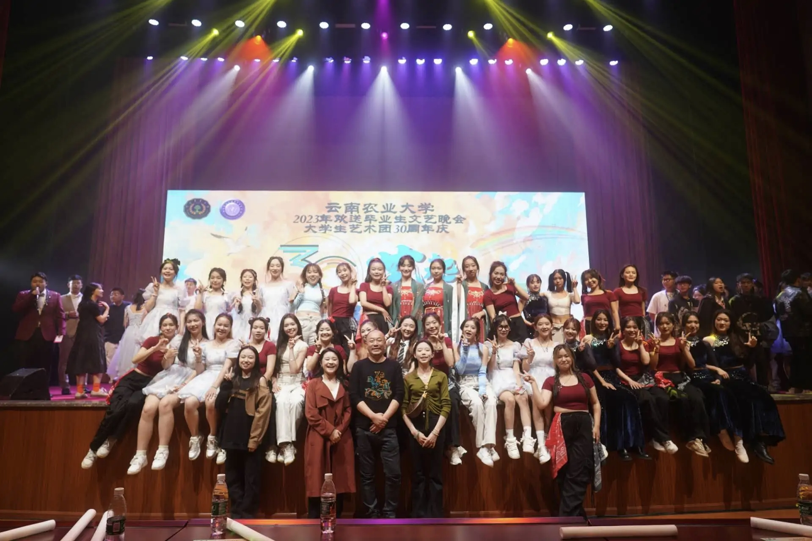
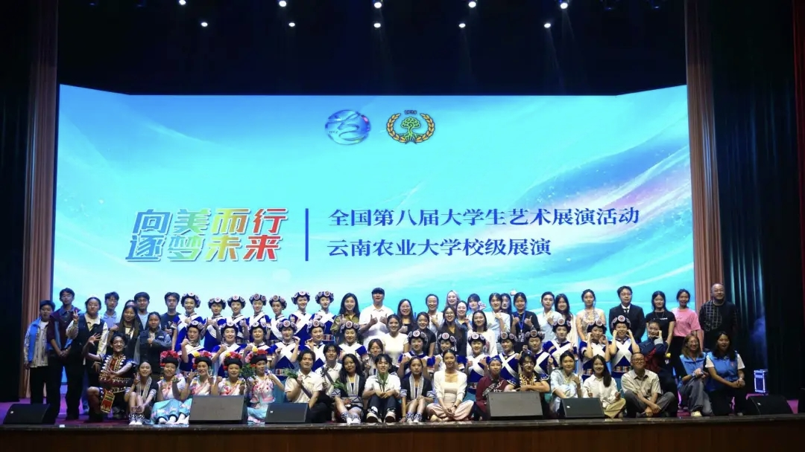
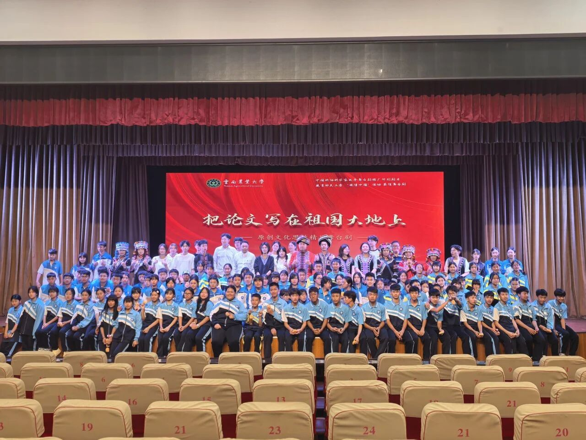
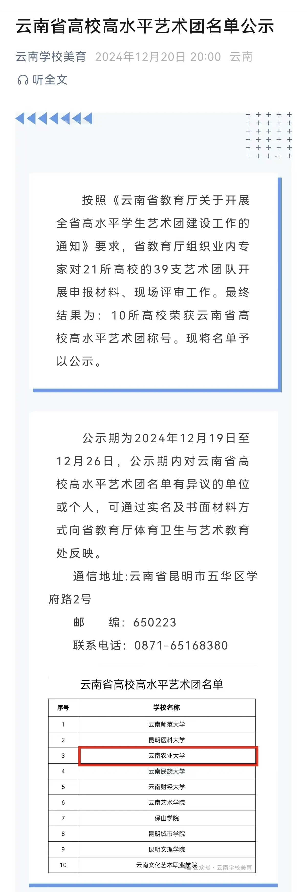
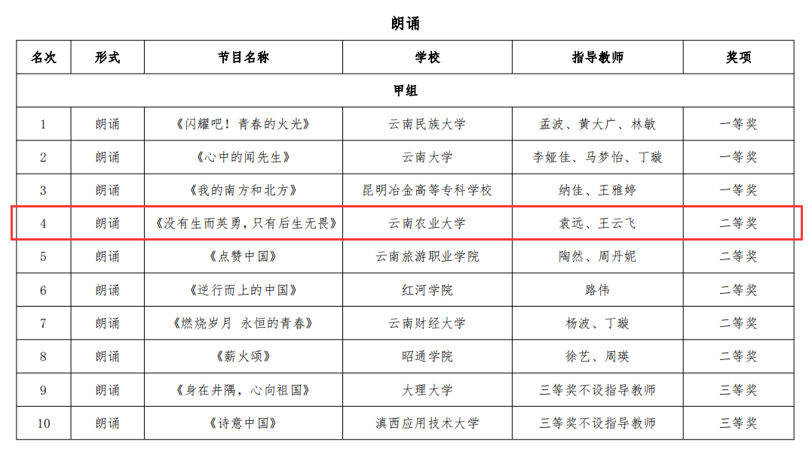
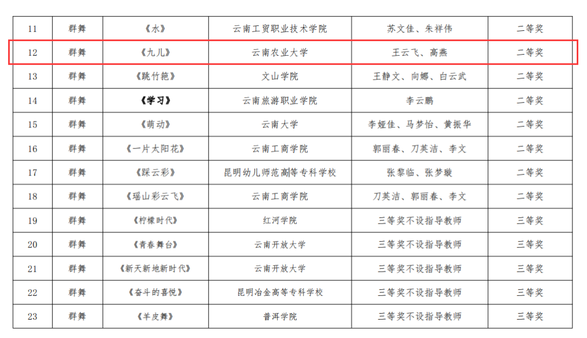
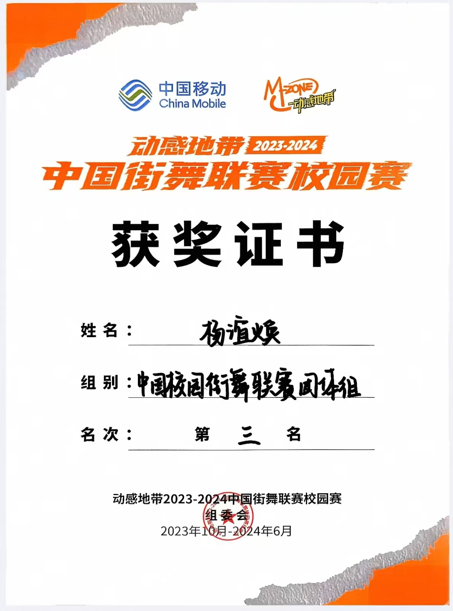
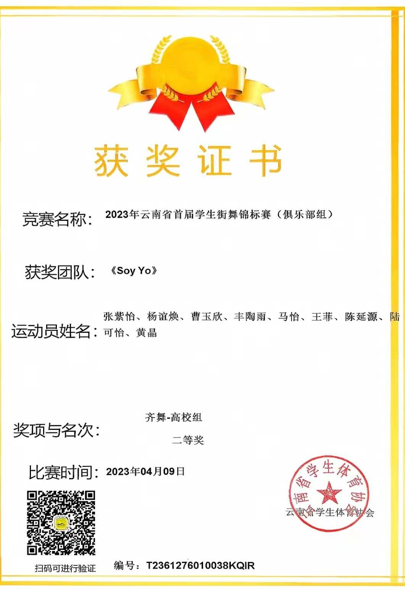

办公室
统筹后勤、人员调度、财务登记、物资保管等，协调各部门日常工作对接。

云南农业大学高水平艺术团（原大学生艺术团）是由校团委指导的全校性学生艺术团体，于2024年获批“云南省高校高水平艺术团”。下设办公室、组织部、宣传部3个工作部门及交响管乐团、舞蹈团、合唱团、器乐队、民乐队、主持队、礼仪队、声乐队、话剧队、舞美部等10支艺术团队。
艺术团承担全校各类文艺演出、校际交流、美育实践及艺术普及职能，主办“迎新晚会”“大学生艺术节”“高雅艺术进校园”等10余项品牌活动，创作并演出《把论文写在祖国大地上》等原创剧目。
艺术团在普洱校区设分团，包含多支演出队伍，成员经选拔后均可参与校内外竞赛及展演。这里既有聚光灯下的舞台呈现，也有日复一日的排练、统筹、宣传与舞美保障，共同构成云农校园美育的重要现场。
02 / 团队组成
从幕后统筹到台前表演，艺术团用清晰分工支撑每一次完整呈现。
统筹后勤、人员调度、财务登记、物资保管等，协调各部门日常工作对接。
负责团员招新、档案管理、考勤考核，策划团建、排练及活动人员统筹安排。
负责活动宣传物料制作、推文海报拍摄，线上线下活动推广、记录演出瞬间。
排练交响、管乐曲目，承接学校学院各大晚会合奏节目。
进入队伍主页编排民族、现代、古典等舞蹈节目，参加学校学院各类文艺汇演和比赛。
进入队伍主页编排合唱曲目，参与晚会、比赛等集体声乐节目演出。
进入队伍主页编排独奏、重奏节目，负责各种校园活动、音乐节等演出。
进入队伍主页编排传统民乐合奏、独奏节目，完成校内外演出。
进入队伍主页负责主持学校学院各大比赛、庆典活动等。
进入队伍主页负责学校学院颁奖典礼、赛事活动以及艺术走秀等重大活动。
进入队伍主页负责举办新生杯、青春杯等大型歌唱比赛，参与各大晚会。
进入队伍主页负责编排小品、舞台剧、短剧等，出演学校学院的语言类文艺节目。
进入队伍主页负责舞台灯光、音响等，演出道具及现场舞台效果调试把控。
进入队伍主页03 / 精彩瞬间
迎新晚会、歌手大赛、展演、音乐节与原创剧目，构成艺术团的舞台记忆。
04 / 精彩活动
大型晚会、校园赛事、艺术展演与原创剧目巡演，让艺术团成为校园文化的重要组织者和表达者。

01
“梦想启航”迎新生晚会于东校区田径场举办，献礼建国76周年。由艺术团承办，原创歌舞、话剧、器乐等红色与耕读主题节目，万名新生师生到场观演，展现校园美育风采，迎接新生逐梦启航。
查看新闻报道
02
本届“青春杯”由艺术团承办，通过师生同台、大众评审、权威献艺、分贝仪决战等一系列创新举措，为全校师生搭建了展示自我、绽放风采的艺术平台，进一步丰富了校园文化生活。
查看新闻报道
03
深入落实美育教育渗透行动的相关要求，培养“以美育人、以文化人”的理念，同时丰富校园文化生活，展现农大学生的青春风采。器乐及其他团体项目专场、声乐与朗诵专场、舞蹈专场，三场特别演出充满激情。
查看新闻报道
04
为深入学习宣传时代楷模精神，探索推进大中小学思想政治教育一体化建设，提升校园文化品牌影响力，4月28日，云南农业大学原创舞台剧《把论文写在祖国大地上》演职团队赴孟连县开展公益巡演活动。
查看新闻报道
05
选手们从民族文化到乡村振兴，从乡土实践到精神传承，号召广大青春理想既要扎根泥土，亦要仰望星空。云农青年已将“把梦想说给世界听”的信念深植于心，未来必续写新时代新农人的精彩篇章。
查看新闻报道
06
展现青春风采、点燃艺术梦想。云南农业大学“新生杯歌舞大赛”是一个专为热爱舞蹈与音乐的新生同学打造的舞台，无论钟情于街舞的酷炫、古典的优雅，还是沉醉于流行的旋律、说唱的节奏，这里都期待同学的精彩绽放。
查看新闻报道







艺术团特色
从大型迎新晚会到校园歌手大赛，从大学生艺术展演到原创舞台剧巡演，高水平艺术团把组织力、专业训练和青春表达结合在一起，持续为云农校园注入鲜活的艺术现场。